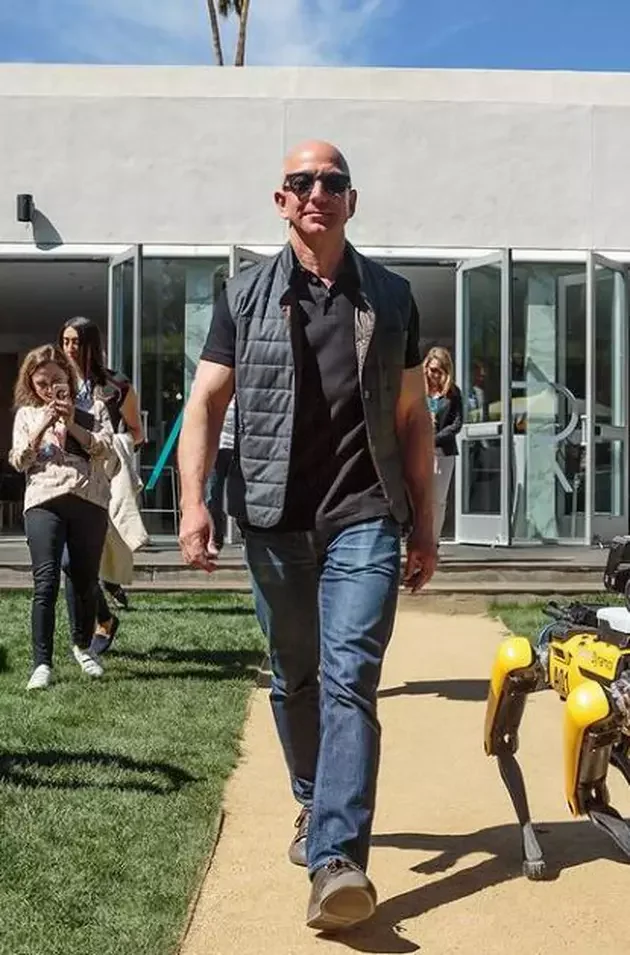

Prof. Ingenieria Aeroespacial.

Los ingenieros aeroespaciales trabajan en diversos proyectos, desde el diseño de nuevos aviones y naves espaciales hasta el desarrollo de sistemas de propulsión más eficientes y la creación de materiales más ligeros y resistentes. También participan en la investigación y desarrollo de nuevas tecnologías aeroespaciales, como aviones hipersónicos, vehículos espaciales reutilizables y sistemas de propulsión espacial avanzados. Los ingenieros aeroespaciales trabajan en diversos proyectos, desde el diseño de nuevos aviones y naves espaciales hasta el desarrollo de sistemas de propulsión más eficientes y la creación de materiales más ligeros y resistentes. También participan en la investigación y desarrollo de nuevas tecnologías aeroespaciales, como aviones hipersónicos, vehículos espaciales reutilizables y sistemas de propulsión espacial avanzados. Los ingenieros aeroespaciales trabajan en diversos proyectos, desde el diseño de nuevos aviones y naves espaciales hasta el desarrollo de sistemas de propulsión más eficientes y la creación de materiales más ligeros y resistentes. También participan en la investigación y desarrollo de nuevas tecnologías aeroespaciales, como aviones hipersónicos, vehículos espaciales reutilizables y sistemas de propulsión espacial avanzados. Los ingenieros aeroespaciales trabajan en diversos proyectos, desde el diseño de nuevos aviones y naves espaciales hasta el desarrollo de sistemas de propulsión más eficientes y la creación de materiales más ligeros y resistentes. También participan en la investigación y desarrollo de nuevas tecnologías aeroespaciales, como aviones hipersónicos, vehículos espaciales reutilizables y sistemas de propulsión espacial avanzados. Los ingenieros aeroespaciales trabajan en diversos proyectos, desde el diseño de nuevos aviones y naves espaciales hasta el desarrollo de sistemas de propulsión más eficientes y la creación de materiales más ligeros y resistentes. También participan en la investigación y desarrollo de nuevas tecnologías aeroespaciales, como aviones hipersónicos, vehículos espaciales reutilizables y sistemas de propulsión espacial avanzados.
Prof. Fisica Cuantica

Los ingenieros aeroespaciales trabajan en diversos proyectos, desde el diseño de nuevos aviones y naves espaciales hasta el desarrollo de sistemas de propulsión más eficientes y la creación de materiales más ligeros y resistentes. También participan en la investigación y desarrollo de nuevas tecnologías aeroespaciales, como aviones hipersónicos, vehículos espaciales reutilizables y sistemas de propulsión espacial avanzados. Los ingenieros aeroespaciales trabajan en diversos proyectos, desde el diseño de nuevos aviones y naves espaciales hasta el desarrollo de sistemas de propulsión más eficientes y la creación de materiales más ligeros y resistentes. También participan en la investigación y desarrollo de nuevas tecnologías aeroespaciales, como aviones hipersónicos, vehículos espaciales reutilizables y sistemas de propulsión espacial avanzados. Los ingenieros aeroespaciales trabajan en diversos proyectos, desde el diseño de nuevos aviones y naves espaciales hasta el desarrollo de sistemas de propulsión más eficientes y la creación de materiales más ligeros y resistentes. También participan en la investigación y desarrollo de nuevas tecnologías aeroespaciales, como aviones hipersónicos, vehículos espaciales reutilizables y sistemas de propulsión espacial avanzados. Los ingenieros aeroespaciales trabajan en diversos proyectos, desde el diseño de nuevos aviones y naves espaciales hasta el desarrollo de sistemas de propulsión más eficientes y la creación de materiales más ligeros y resistentes. También participan en la investigación y desarrollo de nuevas tecnologías aeroespaciales, como aviones hipersónicos, vehículos espaciales reutilizables y sistemas de propulsión espacial avanzados. Los ingenieros aeroespaciales trabajan en diversos proyectos, desde el diseño de nuevos aviones y naves espaciales hasta el desarrollo de sistemas de propulsión más eficientes y la creación de materiales más ligeros y resistentes. También participan en la investigación y desarrollo de nuevas tecnologías aeroespaciales, como aviones hipersónicos, vehículos espaciales reutilizables y sistemas de propulsión espacial avanzados.
Prof. Estructuras de Datos.

Los ingenieros aeroespaciales trabajan en diversos proyectos, desde el diseño de nuevos aviones y naves espaciales hasta el desarrollo de sistemas de propulsión más eficientes y la creación de materiales más ligeros y resistentes. También participan en la investigación y desarrollo de nuevas tecnologías aeroespaciales, como aviones hipersónicos, vehículos espaciales reutilizables y sistemas de propulsión espacial avanzados. Los ingenieros aeroespaciales trabajan en diversos proyectos, desde el diseño de nuevos aviones y naves espaciales hasta el desarrollo de sistemas de propulsión más eficientes y la creación de materiales más ligeros y resistentes. También participan en la investigación y desarrollo de nuevas tecnologías aeroespaciales, como aviones hipersónicos, vehículos espaciales reutilizables y sistemas de propulsión espacial avanzados. Los ingenieros aeroespaciales trabajan en diversos proyectos, desde el diseño de nuevos aviones y naves espaciales hasta el desarrollo de sistemas de propulsión más eficientes y la creación de materiales más ligeros y resistentes. También participan en la investigación y desarrollo de nuevas tecnologías aeroespaciales, como aviones hipersónicos, vehículos espaciales reutilizables y sistemas de propulsión espacial avanzados. Los ingenieros aeroespaciales trabajan en diversos proyectos, desde el diseño de nuevos aviones y naves espaciales hasta el desarrollo de sistemas de propulsión más eficientes y la creación de materiales más ligeros y resistentes. También participan en la investigación y desarrollo de nuevas tecnologías aeroespaciales, como aviones hipersónicos, vehículos espaciales reutilizables y sistemas de propulsión espacial avanzados. Los ingenieros aeroespaciales trabajan en diversos proyectos, desde el diseño de nuevos aviones y naves espaciales hasta el desarrollo de sistemas de propulsión más eficientes y la creación de materiales más ligeros y resistentes. También participan en la investigación y desarrollo de nuevas tecnologías aeroespaciales, como aviones hipersónicos, vehículos espaciales reutilizables y sistemas de propulsión espacial avanzados.
Prof. Comercio Internacional.
Los ingenieros aeroespaciales trabajan en diversos proyectos, desde el diseño de nuevos aviones y naves espaciales hasta el desarrollo de sistemas de propulsión más eficientes y la creación de materiales más ligeros y resistentes. También participan en la investigación y desarrollo de nuevas tecnologías aeroespaciales, como aviones hipersónicos, vehículos espaciales reutilizables y sistemas de propulsión espacial avanzados. Los ingenieros aeroespaciales trabajan en diversos proyectos, desde el diseño de nuevos aviones y naves espaciales hasta el desarrollo de sistemas de propulsión más eficientes y la creación de materiales más ligeros y resistentes. También participan en la investigación y desarrollo de nuevas tecnologías aeroespaciales, como aviones hipersónicos, vehículos espaciales reutilizables y sistemas de propulsión espacial avanzados. Los ingenieros aeroespaciales trabajan en diversos proyectos, desde el diseño de nuevos aviones y naves espaciales hasta el desarrollo de sistemas de propulsión más eficientes y la creación de materiales más ligeros y resistentes. También participan en la investigación y desarrollo de nuevas tecnologías aeroespaciales, como aviones hipersónicos, vehículos espaciales reutilizables y sistemas de propulsión espacial avanzados. Los ingenieros aeroespaciales trabajan en diversos proyectos, desde el diseño de nuevos aviones y naves espaciales hasta el desarrollo de sistemas de propulsión más eficientes y la creación de materiales más ligeros y resistentes. También participan en la investigación y desarrollo de nuevas tecnologías aeroespaciales, como aviones hipersónicos, vehículos espaciales reutilizables y sistemas de propulsión espacial avanzados. Los ingenieros aeroespaciales trabajan en diversos proyectos, desde el diseño de nuevos aviones y naves espaciales hasta el desarrollo de sistemas de propulsión más eficientes y la creación de materiales más ligeros y resistentes. También participan en la investigación y desarrollo de nuevas tecnologías aeroespaciales, como aviones hipersónicos, vehículos espaciales reutilizables y sistemas de propulsión espacial avanzados.